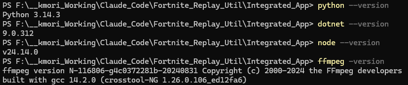
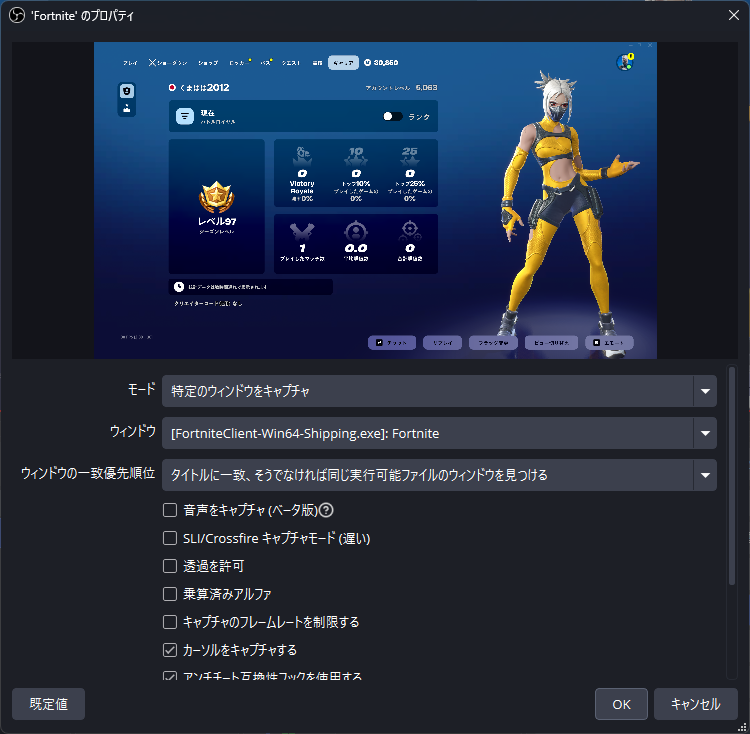
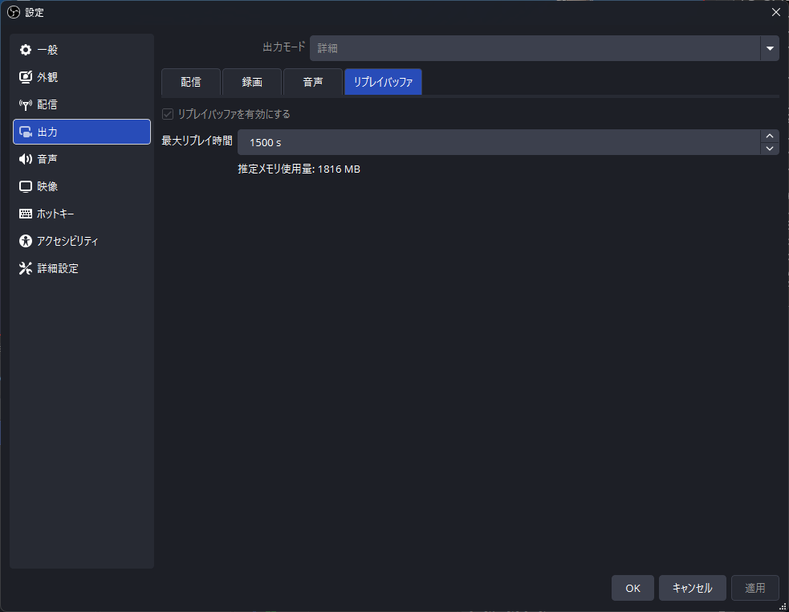
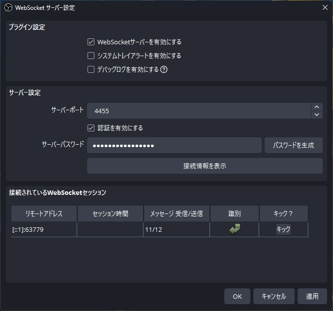
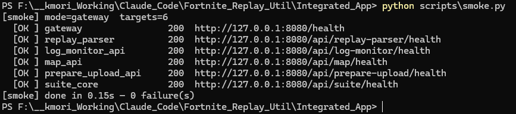

コマンド 1 つで 6 サービスが立ち上がり、scripts/smoke.py が全 OK を返す状態になること。
1必要なソフトウェア
以下をあらかじめインストールしておきます。すべてのコマンドラインツールは、コマンドプロンプトから呼び出せる状態（PATH が通っている）にしてください。
| ソフトウェア | バージョン | 用途 |
|---|---|---|
| Windows | 11 (64bit) | OS |
| Python | 3.11 以降 | Gateway と 4 つの API サービス |
| .NET SDK | 9.0 以降 | replay_parser（.replay のパース） |
| Node.js | 20 以降 | フロントエンド（Vite + React） |
| ffmpeg / ffprobe | 最新安定版 | 録画動画のトリミング |
| OBS Studio | 最新版 | 録画・リプレイバッファ・WebSocket |
| PowerShell | 7 (pwsh) | 起動・停止スクリプト |
新しいコマンドプロンプトで ffmpeg -version / ffprobe -version が実行できることを確認してください。PATH が通っていないと動画ページで FAIL バッジが出ます。

2OBS Studio 設定
本ツールは OBS Studio の録画ファイルと連携します。以下の 2 点を事前に設定してください。詳細は OBS Studio 公式サイト を参照してください。
-
1シーンとソースの設定
Fortnite の画面を録画するには、まず OBS でシーンを作成し、ソースを追加します。
- 「シーン」パネルの + ボタンで任意の名前のシーンを作成します。
- 「ソース」パネルの + ボタンをクリックし、ゲームキャプチャ を選択します。
- モードを 特定のウィンドウをキャプチャ に変更します。
- Fortnite を起動した状態でウィンドウのドロップダウンを開き、
FortniteClient-Win64-Shipping.exeを選択します。
Fortnite を先に起動しておくドロップダウンに
FortniteClient-Win64-Shipping.exeが表示されない場合は、Fortnite を起動してから再度ドロップダウンを開いてください。
図 1.2 — OBS のシーンとゲームキャプチャ設定 -
2リプレイバッファを有効化する
Fortnite の画面を常時録画するため、「ファイル」→「設定」→「出力」→「リプレイバッファ」タブを開き、リプレイバッファを有効にする にチェックを入れてください。保存するリプレイの最大時間は試合の最大所要時間に合わせて設定します。（例: 1500 秒 = 25分）。Fortnite の試合は大体 25 分あれば十分です。
これにより、好きなタイミングで Fortnite の画面の 25 分間の動画をキャプチャすることが出来ます。
図 1.3 — リプレイバッファ有効化と最大時間（1500 秒） -
3WebSocket サーバーを有効化し、パスワードを取得する
「ツール」→「WebSocket サーバー設定」を開き、WebSocket サーバーを有効にする にチェックを入れてください。
「サーバーパスワードを有効にする」をオンにし、表示されたパスワードをコピーしておきます。このパスワードは後述の
services/log_monitor_api/.env（OBS_PASSWORD行）に貼り付けます。パスワードの確認方法「ツール」→「WebSocket サーバー設定」→「接続情報を表示」ボタンからいつでも確認できます。

図 1.4 — WebSocket サーバー有効化（パスワードはマスク表示）
OBS が停止中でも録画フォルダのパスは config.json に手動で指定できます。WebSocket 連携は OBS 起動中のみ有効です。
3リポジトリの取得
任意の作業フォルダで以下を実行します。
git clone <repository-url> Fortnite_Replay_Util
cd Fortnite_Replay_Util\Integrated_App以降の手順はすべて Integrated_App/ 直下で実行することを想定しています。
4Python 環境
-
1仮想環境を作成powershell
python -m venv ..\venvIntegrated_App/の 1 つ上にvenv/を作るのがプロジェクト規約です。 -
2仮想環境を有効化powershell
..\venv\Scripts\Activate.ps1 -
3依存パッケージをインストールpowershell
pip install -r services\requirements.txt
5フロントエンド
cd frontend
npm install
cd ..npm install は初回のみ数分かかります。完了すると frontend/node_modules/ が作成されます。
6.NET パーサ
.replay のパースは C# の replay_parser サービスが担当します。初回起動時に自動ビルドされるため、ここでは依存物の確認だけ行います。
dotnet --list-sdks一覧に 9.0.x が含まれていれば OK です。
7初期設定ファイル
設定は ~/.fortnite-suite/config.json に保存されます。初回はテンプレートを生成します。
python scripts\init_config.py以下の 4 項目を実環境に合わせて編集してください。
| キー (API 上) | 内容 | 例 |
|---|---|---|
user_player_id |
自分の Epic 表示名。動画候補の絞り込みに使用 | YourEpicName |
demos_dir |
Fortnite の .replay が置かれるフォルダ |
C:\Users\you\AppData\Local\...\Demos |
obs_recording_dir |
OBS の録画保存フォルダ（起動中なら WebSocket から自動取得） | D:\OBS\Recordings |
log_path |
Fortnite のログファイルパス | C:\Users\you\AppData\Local\...\FortniteGame.log |
config.json は内部的にネスト構造（player.epic_display_name など）で保存されますが、API 経由では上の表のフラットなキーで読み書きできます。UI の「設定」ページから編集する場合は気にする必要はありません。

8OBS パスワードの設定 (.env)
OBS WebSocket への接続情報は services/log_monitor_api/.env に保存します。config.json ではなく このファイルに設定する点に注意してください。
-
1テンプレートをコピーpowershell
copy services\log_monitor_api\.env.example services\log_monitor_api\.env -
2OBS_PASSWORD を書き換える
テキストエディタで
services/log_monitor_api/.envを開き、OBS_PASSWORD=行の右辺を Step 2-3 でコピーした実パスワードに置き換えます。envOBS_HOST=localhost OBS_PORT=4455 OBS_PASSWORD=<OBS で取得した実パスワード> OBS_SAVE_DELAY=10
| キー | 用途 | 既定値 |
|---|---|---|
OBS_HOST |
OBS WebSocket のホスト | localhost |
OBS_PORT |
OBS WebSocket のポート | 4455 |
OBS_PASSWORD |
§2 Step 3 で設定した WebSocket パスワード | （必須） |
OBS_SAVE_DELAY |
ロビー戻り検出からリプレイバッファ保存までの秒数 | 10 |
.env は .gitignore に登録されており、コミットされません。実パスワードを誤って公開リポジトリに push しないための仕組みです。新しい PC にセットアップする際は毎回手動で再設定してください。
この .env は log_monitor_api と suite_core の両方が読み込みます。後者は OBS WebSocket 経由で「OBS の録画フォルダ」を自動取得する用途で利用します。
9セットアップ確認
-
1全サービス起動powershell
pwsh scripts\start.ps16 サービス分の起動ログ（PID）が出れば OK。
-
2疎通確認powershell
python scripts\smoke.py全 6 行が OK で終了コード 0 なら成功。
-
3フロント起動powershell
cd frontend npm run devブラウザで
http://localhost:5173を開き、左サイドバーに 6 リンクが表示されていれば OK。
ここまで成功していれば基本セットアップは完了です。次章で日常の起動/停止の流れを押さえましょう。
